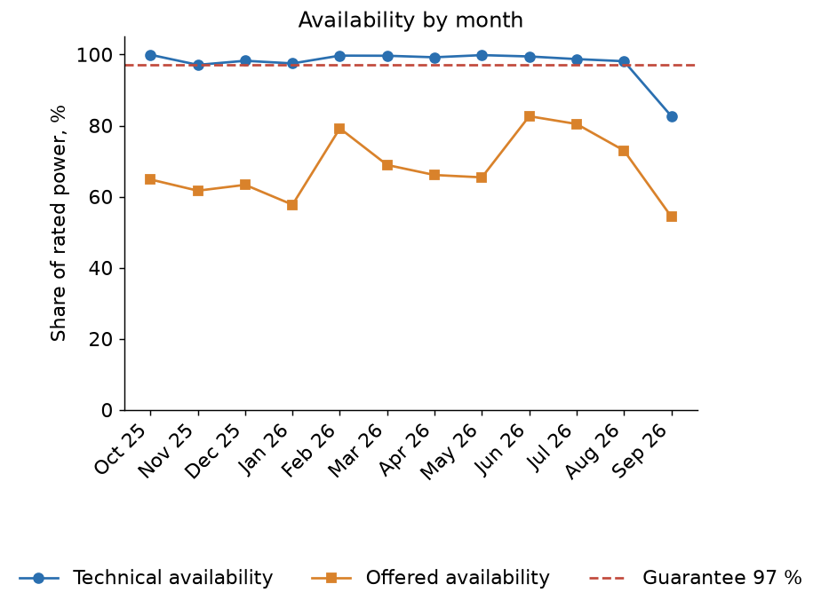
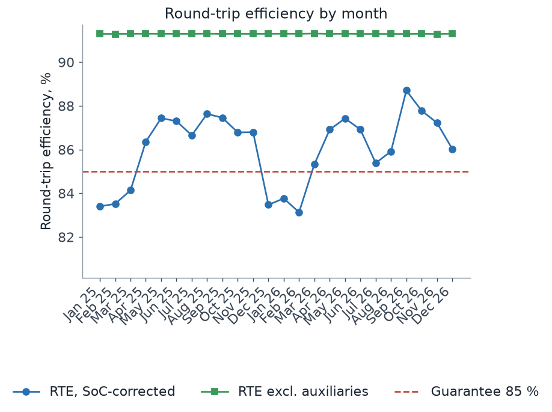

Working material, not an official statement and not investment advice. The money figures are a simulation on public prices for a price taker of 1 MW; balancing markets are small, so they do not scale to a fleet. Toll, guarantees and fixed costs are illustrative placeholders; capacity market terms are to be verified. In a fleet model at 2 000 MW of identical batteries a battery keeps 21 % of the lone battery's margin.
Example reports

Technical report, NEM battery
Rangebank BESS: 12 months of AEMO open data, availability, RTE, cycles, state of health.

Technical report, EMS table
The same layout on an EMS export (synthetic battery with known truth): 23 warranty violations found, auxiliary load, LTSA availability.

Financial report
Revenue by source, costs, margin, budget variance and a budget-to-actual bridge. A simulation on public prices, not a real plant.

Strategy comparison
Day-ahead arbitrage, revenue stack, tolling and capacity market on one evaluation, 365 days, every plan made with an explicit as-of information set.
Strategies on one evaluation
Budget to actual margin
Source
Code, README with the method and the limits, and the tests: https://github.com/kwwaleszczynski-del/bess-reporting-kit.